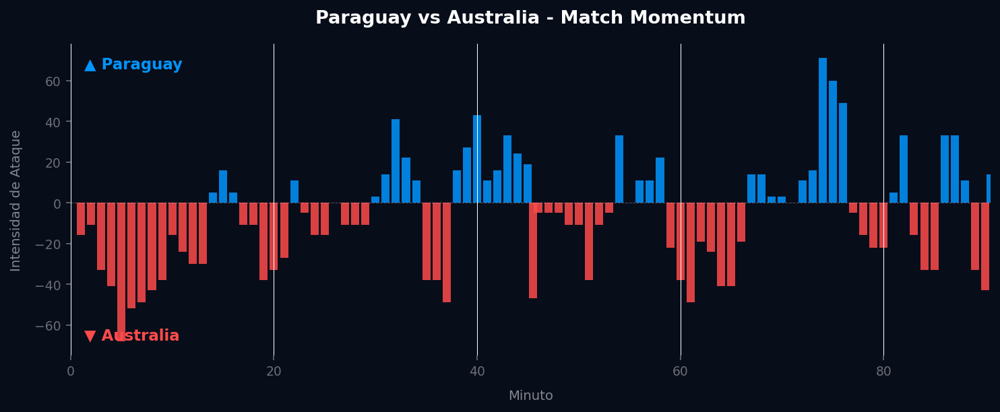
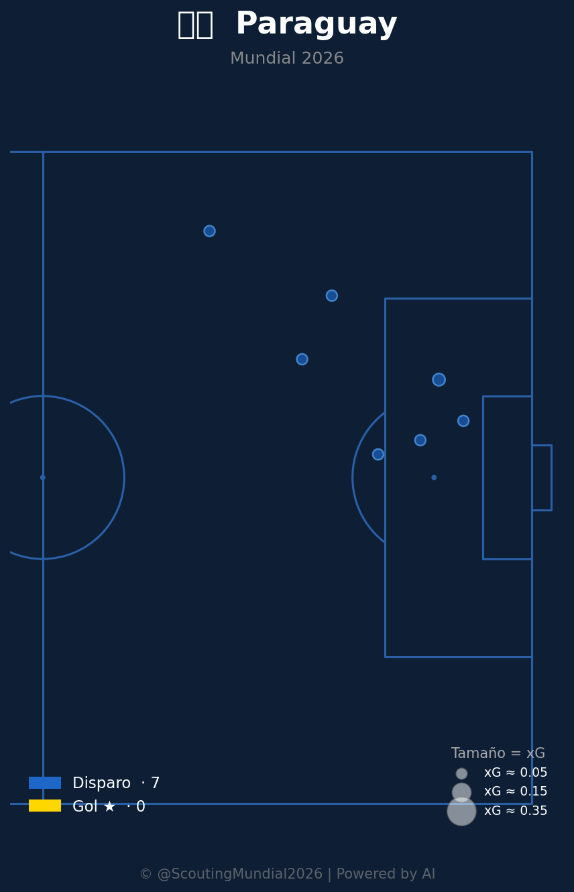
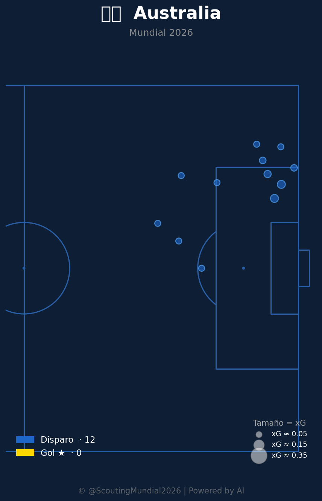

Grupo D
 Australia
Australia
Paraguay vs Australia
📅 2026-06-25 · 🕒 14:00 (Local)
Paraguay

0 - 0
FINALIZADO
Australia
📅 2026-06-25 · 🕒 14:00 (Local)
Australia
El encuentro entre Paraguay y Australia, correspondiente al Grupo D del Mundial 2026, culminó en un insípido empate 0-0, un resultado que, si bien refleja la paridad en la solidez defensiva, evidencia las carencias ofensivas de ambos conjuntos. El partido se caracterizó por una lucha constante en el mediocampo y pocas ocasiones claras de gol. Australia intentó tomar la iniciativa en los primeros compases, buscando desbordes por las bandas y centros al área, pero la zaga paraguaya se mostró infranqueable. A medida que avanzaba el reloj, Paraguay ajustó su bloque defensivo y comenzó a generar transiciones, aunque sin la fineza necesaria en el último tercio. Pese a los esfuerzos de jugadores como Almirón por Paraguay y Boyle por Australia, los guardametas tuvieron una tarde relativamente tranquila, con intervenciones puntuales pero ninguna de real peligro que pudiera decantar la balanza. El juego se tornó previsible y las defensas se impusieron sistemáticamente a cualquier intento creativo.
El análisis del Match Momentum revela una dinámica particular en este empate sin goles. Australia impuso una intensidad máxima temprana de 68.00 en el minuto 5', lo que subraya su intención de salir a presionar y buscar un gol rápido que les diera ventaja. Esta ráfaga inicial es coherente con su dominio porcentual en intensidad de ataque (57.6%), indicando que, en líneas generales, los "Socceroos" llevaron la iniciativa durante más tiempo. Sin embargo, su incapacidad para capitalizar este ímpetu inicial y el hecho de que su pico de intensidad no se tradujera en un gol, fue un presagio de su frustración ofensiva.
Paraguay, por su parte, mostró una estrategia más conservadora en el inicio, absorbiendo la presión y buscando sus momentos. Su intensidad máxima llegó mucho más tarde, en el minuto 74' con un valor de 71.00, superando ligeramente la de su rival. Este pico tardío sugiere un intento de arremetida final o un ajuste táctico para buscar la victoria en el último cuarto del partido, mostrando una capacidad de resiliencia. No obstante, al igual que Australia, no lograron materializar esta fase de dominio en el marcador. El Match Point del partido se sitúa precisamente en la respuesta defensiva paraguaya ante la embestida inicial australiana. La capacidad de Paraguay para neutralizar el pico de intensidad de Australia en el minuto 5' y solidificar su bloque defensivo, sin conceder goles durante ese período de mayor presión, fue el momento clave que cimentó el 0-0. A partir de ahí, el partido entró en una fase de equilibrio donde ninguna de las dos ofensivas pudo romper la resistencia del rival, a pesar de los esfuerzos posteriores de Paraguay.

El planteamiento táctico de Paraguay se centró en una estructura defensiva sólida, priorizando la seguridad atrás y la contención en el mediocampo. El equipo se organizó en un bloque medio-bajo, cerrando bien los espacios centrales y forzando a Australia a buscar las bandas, donde los defensores laterales paraguayos demostraron gran solvencia en los duelos individuales. La dupla de mediocampistas centrales fue fundamental para anular las intentonas de juego interior australiano, recuperando balones y distribuyendo con criterio, aunque sin la verticalidad necesaria para conectar eficazmente con los atacantes. Paraguay sufrió en la transición ofensiva, mostrando dificultades para generar volumen de juego y profundidad, lo que los obligó a depender de destellos individuales que rara vez lograron desequilibrar a la defensa australiana.
Australia salió al campo con una propuesta más ofensiva, buscando imponer su ritmo desde el inicio, como lo demuestra su pico de intensidad temprana. El equipo intentó construir juego desde la defensa, con sus centrales distribuyendo y los laterales proyectándose constantemente para generar superioridad numérica en las bandas. Utilizaron un bloque alto en los primeros minutos, buscando ahogar la salida paraguaya, pero esta presión inicial no se tradujo en una ventaja. Sus virtudes radicaron en la disciplina táctica para mantener la posesión y en la capacidad de sus mediocampistas para dictar el tempo del juego, pero fallaron rotundamente en la fase final. La falta de contundencia en el último tercio, sumada a una escasa creatividad para desmantelar el compacto bloque paraguayo, fue su principal déficit. Los delanteros australianos se vieron aislados y sin el apoyo necesario para generar ocasiones claras, chocando repetidamente contra la organizada defensa rival.
El duelo táctico entre los entrenadores de Paraguay y Australia fue una partida de ajedrez donde la cautela prevaleció sobre el riesgo. Ambos técnicos priorizaron la organización defensiva y la no-concesión, neutralizándose mutuamente. Australia tuvo una mayor intención ofensiva y una ligera superioridad en la posesión y la intensidad de ataque a lo largo del encuentro, pero Paraguay ejecutó su plan defensivo con una eficacia implacable. El veredicto final es que el 0-0 es un marcador justo, reflejando tanto la solidez defensiva de Paraguay como la incapacidad de Australia para transformar su dominio y sus picos de intensidad en goles. Ningún equipo demostró la calidad ofensiva necesaria para merecer los tres puntos.



